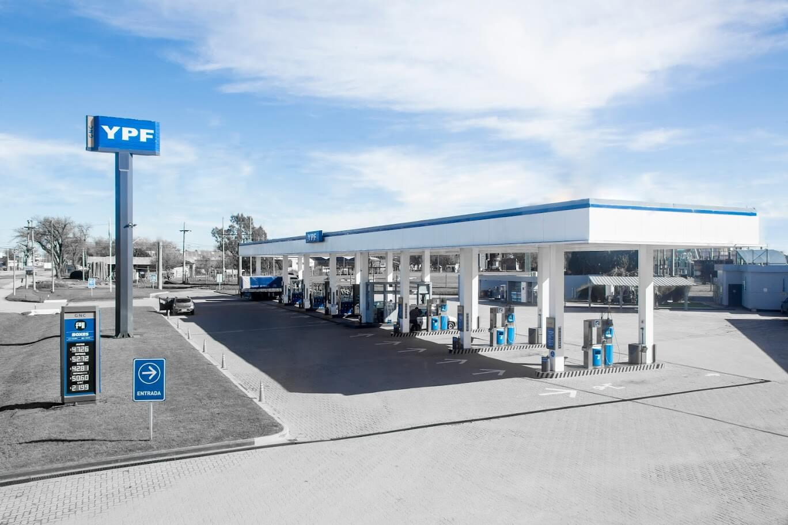
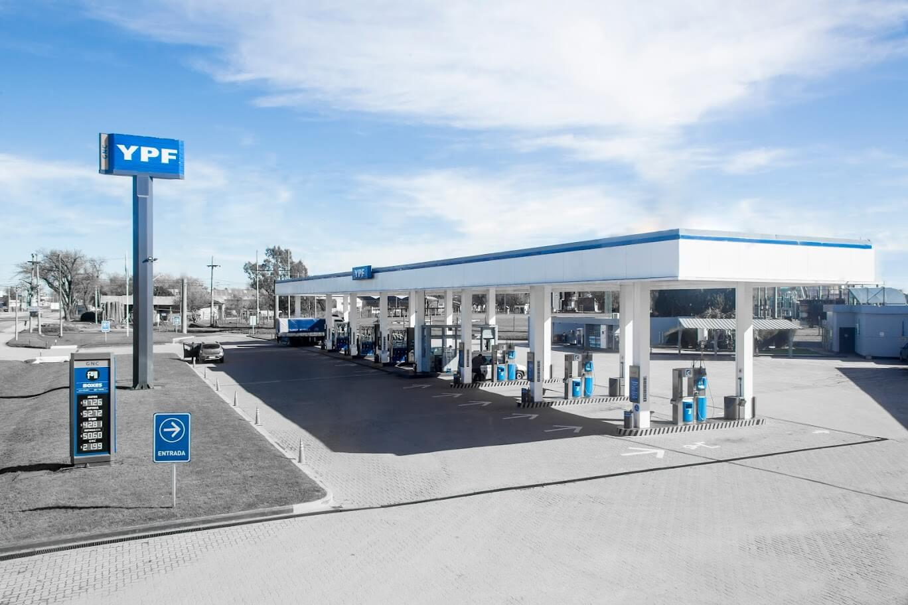

Cuidamos el agua
-
Ahorramos 200 litros por estacion y dia con la utilizacion de lavavajillas de ultima tecnologia, reemplazando el lavado tradicional con el que se utiliza mayor cantidad de agua.
-
Ahorramos 186 litros por estacion y dia con la utilizacion de fregadoras de ultima tecnologia, remplazando la utilizacion de baldes en la limpíeza de playa
-
Ahorramos 198 litros por estacion y dia con la utilizacion de rociadores para vidrios a presion, remplazando las bachas de playa.
 
